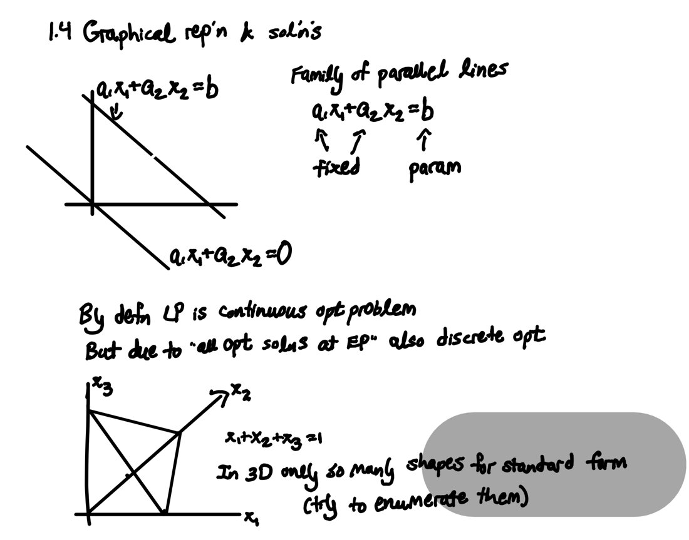

I like hearing from people building AI systems that work alongside experts.
Research
2026–present · Ph.D. research
When can a cheap AI judge stand in for experts?
Combine a small weekly stream of expert feedback with abundant LLM judgments to keep a deployed model accurate, with planning numbers for how many questions go to each.
Done with Claude as a research partner.
2025–2026 · with Emma Savannah Johnson
Which costly data are worth collecting?
Pick the measurements that pin down the numbers a decision rests on. No prior, no noise model, and it runs on off-the-shelf solvers. Working with Claude, I scaled it to a 6.6-million-variable school-outbreak model.
One formulation, eleven problems. The questions are not always measurements: legal requests, record retrievals, and waiting for an event all count.
Public health
School outbreakWho was infected, and when? Test a person for a time window.
Water contaminationWhere and when did it enter? Sample at finer tolerances.
Biology
Food websWho eats whom? Buy gut-content and diet studies.
Metabolic fluxFlows inside a cell? Buy isotope tracers.
Haplotype phaseWhich copy carries each allele? Assays comparing two sites.
Engineering
Traffic tomographyFlows by vehicle class? Sensors of increasing resolution.
Model-based diagnosisWhich component failed? Choose test probes.
Unmetered solarLoad vs. solar split? When and where to meter.
Economics & supply chains
Interbank contagionWho owes whom? Legal data requests.
Suppressed travel demandDemand at service never offered? Surveys, traces, pilots.
Supply-chain provenanceWho shipped each part? Declarations, audits, lab tests.
From the demo: how a threshold rule's guarantee erodes as an adversary gets more control.
Rice, 2024–2025 · with Sebastian Perez-Salazar
Choosing on the spot
Options arrive one at a time and each must be taken or passed for good (the k-secretary problem). Closed-form guarantees for simple threshold rules, 1.3x better than the best known.
I directed AI agents to write two Pyomo-to-Gurobi transpilers, provably correct for the target class of models. I didn't review every line; I built the checks instead.

Left: a drill Claude typeset and sent to the tablet, with my answers in ink (the key is printed upside down). Right: my notes, which Claude reads back.
Personal · used daily
Claude ↔ reMarkable loop
I wanted to work through papers on paper, rather than chatting with a screen. So I built a loop: Claude sends prompts to my reMarkable, reads my handwritten notes, and decides what to ask next.
First test: eight quick choices between recipes picked out the four of twenty I wanted to cook that week. I cooked all four.
What each of the three hidden neurons looks for in a 7×7 digit (blue: pushes up, red: pushes down).